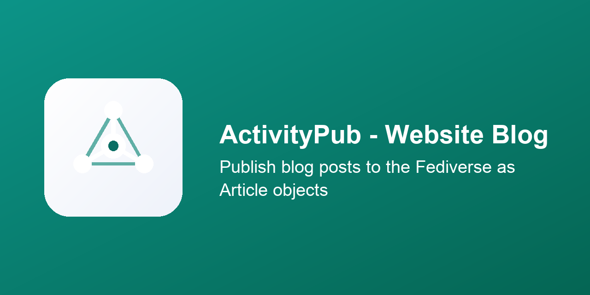

Adds Federate posts as to the blog form. Once an actor
is set, publishing a post sends a Create, editing
it sends an Update, and unpublishing or deleting
it sends a Delete to that actor's Fediverse
followers.
Sent as an ActivityStreams Note, not
Article - confirmed against a real Mastodon
instance that Article is silently never shown in
the timeline. If the post's author has their own actor on the
same website, the post is attributed to the author instead of
the blog. Cover image, subtitle and blog tags are carried
across.
The ActivityPub Federation engine module and Website Blog. Configure at least one actor first (Fediverse → Actors).
Licensed under LGPL-3.